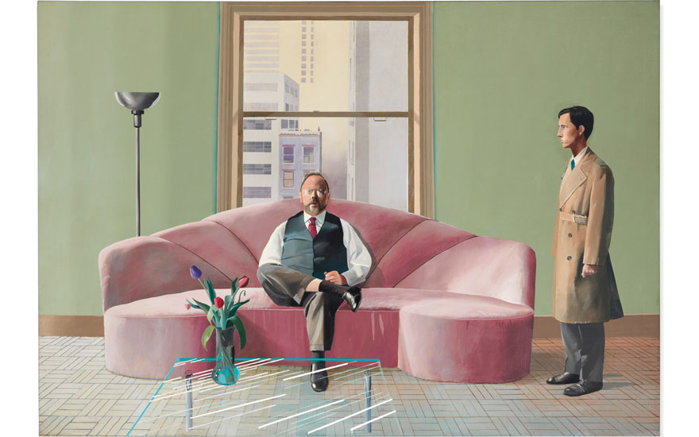
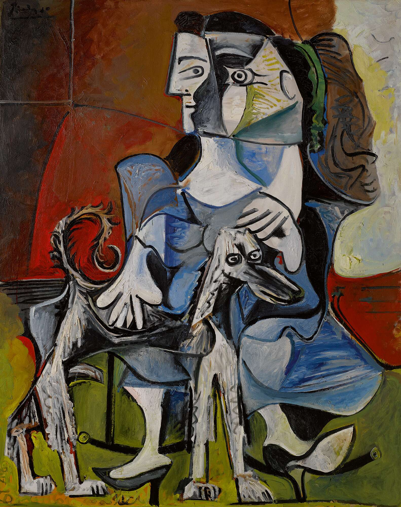
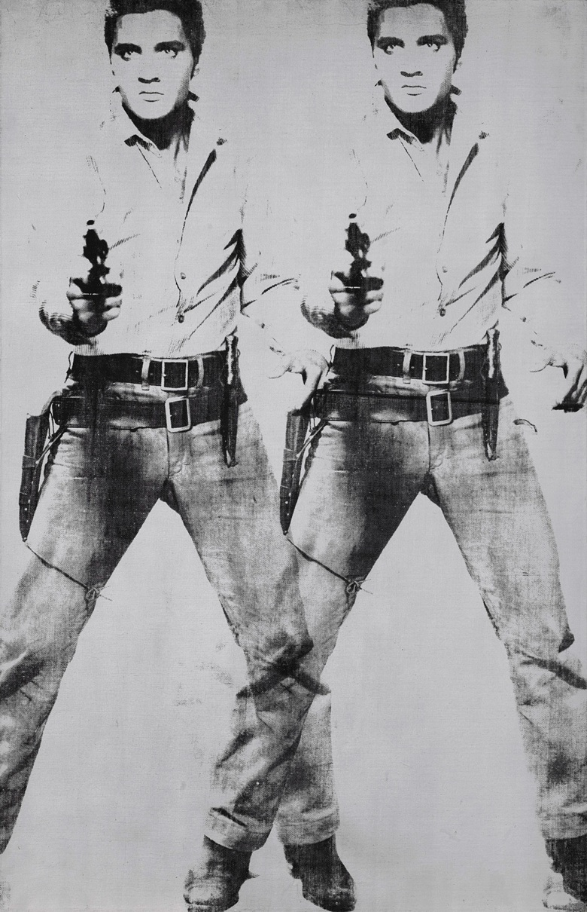
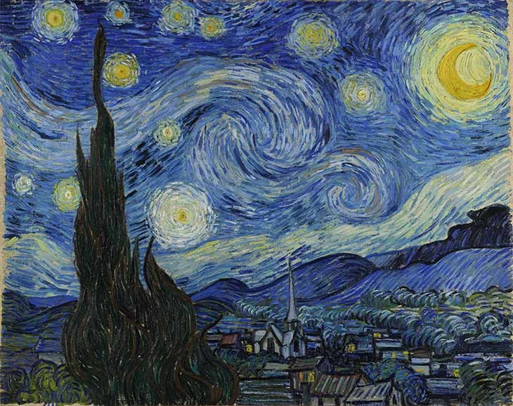
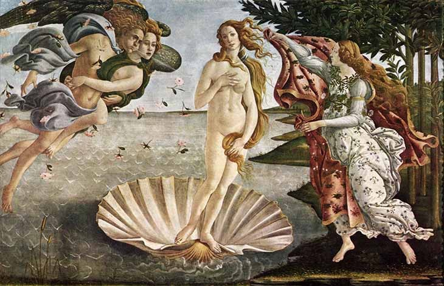
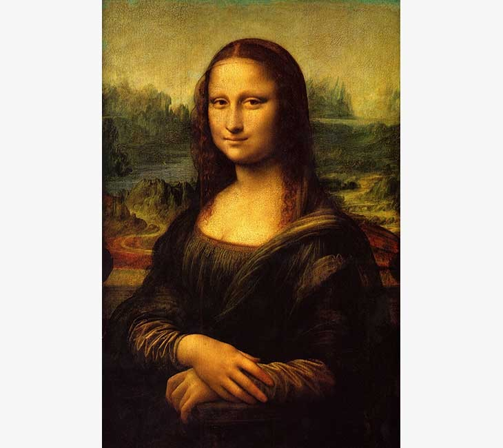
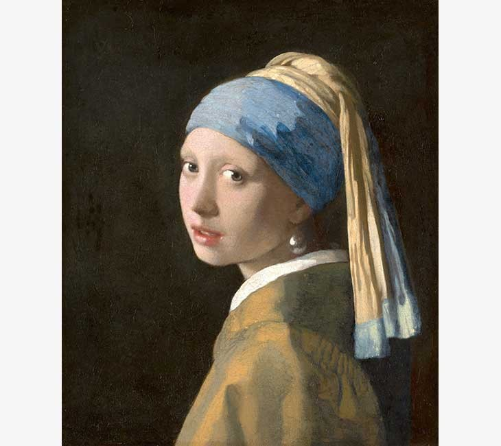

Henry Geldzahler and Christopher Scott
1969. Tuval üzerine akrilik. 84 x 120 inç (213,4 x 304,8 cm). İstek üzerine tahmin edin. 6 Mart 2019'da Londra'daki Christie's'de Savaş Sonrası ve Çağdaş Sanat Akşam İndirimi'nde sunulmuştur.

Femme au Chien
esim, Picasso'nun portredeki her iki konu için sergilediği büyük sevginin bir örneğidir ve öncülüğünü yaptığı kübist üslup unsurlarına sahiptir.
Rabbit
Jeff Koons'un 1986 paslanmaz çelik heykelidir. Canlı bir sanatçı tarafından açık artırmada satılan ve Mayıs 2019'da 91.1 milyon $ 'a satılan en pahalı iş.

Double Elvis
1950'ler boyunca Amerika'nın en ünlü rock'n roll şarkıcısı ve seks sembolü olan Elvis Presley'in gerçek boyutlu birkaç portresini yaptı .

Yıldızlı Gece
Vincent van Gogh tarafından yapılan yağlı boya tablo. Haziran 1889'da yaptığı tabloda ressam, sanatoryumdaki odasının doğuya bakan pencereden görünen Saint-Rémy-de-Provence köyünün gün doğuşundan hemen önceki görünüşünü resmetmiştir.

Venüs'ün Doğuşu
Sandro Botticelli'nin 1482–1486 yılları arasında tuval üzerine tempera ile çizdiği tablodur. Tabloda, Venüs'ün ergen bir kadın olarak denizden doğarak kıyıya çıkışı betimlenir. Dünyanın en bilinen resimlerinden biri olan tablo, Floransa'daki Uffizi'de sergilenmektedir.

Mona lisa
Leonardo da Vinci tarafından kavak bir pano üzerine Sfumato tekniği ile resmedilmiş 16. yüzyıl yağlı boya portresidir. Resim hâlen Paris'teki Louvre Müzesi'nde Francesco del Giocondo'nun karısı, Lisa Gherardini Portresi başlığı altında sergilenmektedir.
Guernica
Pablo Picasso tarafından 1937'de yapılan, İspanya İç Savaşı sırasında Nazi Almanyası'na ait 28 bombardıman uçağının 26 Nisan 1937'de İspanya'daki Guernica şehrini bombalamasını anlatan, 7,76 m eninde ve 3,49 m yüksekliğinde anıtsal tablodur.

İnci Küpeli Kız
Johannes Vermeer'in başyapıtlarından biri olan tablodur. Adından anlaşılacağı gibi odak noktası bir inci küpedir. Lahey'de, Mauritshuis'te sergilenmektedir. Kimi zaman "kuzeyin Mona Lisa'sı" ya da "Hollandalı Mona Lisa" olarak adlandırılır.